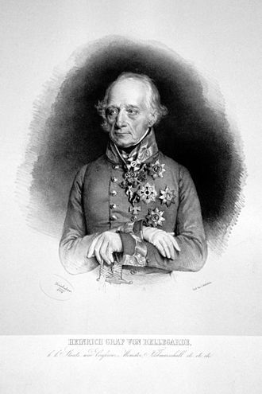
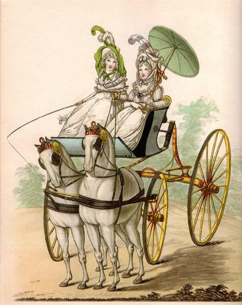

바그람 전투 (제7편) - 베르나도트의 사정
게시: 2017-07-23T18:51:56+09:00
7월 6일 새벽, 카알 대공이 정한 공격 개시 시간을 제대로 지킨 것은 로젠베르크 대공 뿐이었던 것은 아니었습니다. 당연히 카알 대공이 위치한 도이치-바그람 마을 인근에 있던 부대들도 제때에 작전 명령을 받았고, 그에 따라 오스트리아 제1 군단도 벨가르드(Heinrich Joseph Johannes, Graf von Bellegarde) 백작의 지휘 하에 오전 3시부터 행군을 시작했습니다. 이들이 공격 목표는 바로 코 앞에 있는 아더클라(Aderklaa) 마을이었습니다. 카알 대공의 이 날 공격의 진짜 펀치는 오스트리아군의 우익, 즉 클레나우와 콜로브라트의 2개 군단이었으나, 벨가르드 백작이 맡은 이 아더클라 공격도 매우 중요했습니다. 이 작은 마을이 전체 전선의 중앙부에 해당하는 곳이었으므로, 이 곳을 빼앗는다면 프랑스군 전선이 두동강나는 것이었으니까요. 그런 상황이 발생하도록 나폴레옹이 놔둘리가 없었으므로 강력한 저항이 예상되었고, 이 곳을 향하는 벨가르드 백작의 마음은 무척이나 비장했습니다.

(벨가르드 백작이십니다. 이 분 성씨는 누가 봐도 프랑스식인데, 그 이유는 이 분 가문이 사보이(Savoy) 귀족 출신이시기 때문입니다. 정작 이 분은 작센 태생입니다만, 이렇게 독일에 정착한 프랑스식 성씨를 가진 분들은 자기 성을 프랑스식으로 읽는지 독일식으로 읽는지 궁금합니다.)
약속한 공격 개시 시간인 새벽 4시가 되자, 벨가르드 백작은 슈투터하임(Stutterheim) 소장의 지휘 하에 3개 보병 대대와 3개 기병 대대를 조심스럽게 아더클라로 진격시켰습니다. 오스트리아군 선봉대는 아더클라 마을 주변에 구축된 토루 너머에서 언제라도 적군이 고개를 내밀고 일제 사격을 퍼부을 것을 예상하며 눈을 질끈 감고 어둠 속을 걸어들어갔습니다. 그러나 아무리 기다려도 벨가르드 백작의 귀에 총소리가 들려오지 않았습니다. 천만뜻밖에도, 이 요충지가 텅 비어있었던 것입니다. 이건 너무나 예상 밖의 일이어서 오스트리아군은 아더클라 마을로 선듯 진입하지 못하고 먼저 탐색조를 투입하여 이게 혹시 뭔가 함정이 아닌지 확인부터 해야 할 정도였습니다. 정말 마을이 비어 있다는 것이 확인되자, 오스트리아군은 신이 나서 마을을 점령하고 제1 군단의 나머지 대대들도 밀물처럼 쏟아져 들어가 자리를 잡았습니다. 리히텐슈타인(Liechtenstein) 대공의 기병대도 마을 바로 뒤 편에 자리를 잡고 만반의 준비를 갖추었지요.
일이 이렇게 되자, 오히려 벨가르드 백작은 당혹스러워 했습니다. 아더클라 마을을 점령하는데 몇 시간은 걸릴 것이라고 생각했는데, 불과 10여분 만에 점령이 끝나자 이제 뭘 해야 하는지가 불분명했던 것입니다. 이때 그냥 진격하여 프랑스군 후방으로 돌파해들어갔다면 어땠을까 싶습니다만, 벨가르드 백작은 역시 구시대의 인물로서 카알 대공의 전체 작전 방향을 바꿔 놓을 수도 있는 행동을 독단적으로 취하지 못하고 그냥 '일단 임무 완수'를 선언하고 그 자리에 주저 앉아버렸습니다. 그가 받은 명령서에는 일단 마을을 점령하면 예비 병력이 후방에서 도착하기를 기다리라고 되어 있었거든요. 카알 대공의 주공은 어디까지나 우익의 클레나우와 콜로브라트였으므로, 카알 대공은 벨가르드 백작의 공격도 이들과 보조를 같이 하기를 원했기 때문에 그런 명령은 내린 것이었습니다. 하지만 이런 예상 밖의 횡재수를 제대로 활용하지 못한 것은 오스트리아군 지휘부의 경직성이 많이 개선되었다고는 해도 여전히 프랑스군에 미치지 못한다는 것을 반증하는 것이었습니다.
한편, 원래 이 곳을 지켜야 하지만 독단적으로 후퇴했던 베르나도트도 바보라서 그랬던 것은 아니었습니다. 오히려, 그의 후퇴에는 꽤 그럴 만한 이유가 있었습니다. 일단 그의 변명대로 그가 맡은 제9 군단은 병력도 적고 훈련도도 떨어지는데다, 결정적으로 사기가 낮았습니다. 대부분이 작센인이었던 그의 병사들은 남의 나라 전쟁에 끌려다니는 처지였으니 사기가 높다면 이상한 일이었겠지요. 그런 상황에서 어제밤의 패배는 충격이 컸고, 게다가 패배의 원인이 아군인 프랑스군에게 당한 총질 때문이었으니 사기는 더욱 바닥을 칠 수 밖에 없었습니다. 덕분에 뿔뿔히 흩어져 후방으로 도망친 병력들을 재규합하기 위해서라도 일단 후퇴할 수 밖에 없었던 점은 그럴 수도 있겠다 싶은 일이었습니다.
문제는 그렇다고 아더클라를 텅텅 비워두고 전체 군단을 다 뒤로 뺄 필요가 있었는가 하는 점입니다. 여기에 대해서도 베르나도트는 니름대로의 이유가 있었습니다. 아더클라가 너무 적진에 바싹 붙어 있는데다, 전체 프랑스 전열에서 아더클라만 너무 앞으로 튀어 나와 있기 때문에 너무 위험하다는 것이었지요. 그런 위험 지역에서 적의 공격을 견뎌내는 것보다는, 차라리 그 위치를 비워놓았다가 적이 습격해올 경우 역습을 가하는 것이 더 낫다는 생각이었습니다. 이건 물론 어이없는 변명이긴 했지만, 그렇다고 전혀 말이 안 되는 이야기도 아니었습니다. 확실히 아더클라는 전체 프랑스군 전선에서 가장 위험한 곳이었습니다. '드루와 드루와'하는 식으로 벌어진 집게 모양의 오스트리아군 전선 안을 쐐기 모양으로 파고 들어간 프랑스군 중에서도, 쐐기의 뾰족한 끝 부분이 바로 아더클라였으니까요.
당연히 아더클라를 잘 지키는 것이 전체 프랑스군에게 무척이나 중요한 일이었습니다. 그런데 왜 그런 막중한 책임을 지는 자리에 하필이면 베르나도트를 배치했는지에 대해서는 따로 남겨진 이야기가 없습니다. 나폴레옹이 이 곳에 베르나도트의 제9 군단을 배치한 것은 누가 봐도 석연치 않은 결정이었습니다. 가장 믿을 만한 사람을 배치해야 하는 자리에 가장 믿을 수 없고 미운 털이 박힌 군단장을 배치한 셈이었으니까요. 더군다나 베르나도트의 제9 군단은 당시 현장에서 가장 약한 군단 중 하나였습니다. 총 3개 사단 중 뒤파(Dupas) 장군의 사단만 프랑스군이었고 나머지 2개 사단은 작센군이었고 전체적으로는 약 1만7천의 병력 밖에 없었거든요. 그런데 그 중에서도 하필 뒤파 장군의 프랑스 사단은 막도날드 쪽으로 차출되어야 했으니, 베르나도트가 심통이 날 만도 했었지요. 그런 제9 군단을 가장 위험하고 중요한 곳에 배치를 한다는 것은 상식적으로 이해가 가지 않는 일이었습니다. 어쩌면 나폴레옹은 이번 기회에 베르나도트를 제거하려고 음모를 꾸민 것일 수도 있습니다. 아더클라는 바그람 고지 언저리와 약 1km 조금 더 넘게 떨어진 곳으로서, 그 고지에 배치된 오스트리아군의 중포의 사거리 안에 들어가는 위치였습니다. 전투가 벌어지면 오스트리아군의 큼지막한 대포알이 아더클라를 향해 빗발처럼 날아들테니, 그 중 하나가 베르나도트의 허리를 두동강 내지 말라는 법도 없었습니다. 베르나도트가 방어 진지를 무단 이탈하여 후방에서 대기한 것도 어쩌면 나폴레옹의 그런 속셈을 간파했기 때문일 수도 있습니다.
이유야 어쨌건, 베르나도트도 아더클라 바로 1km 남서쪽의 어둠 속에서 오스트리아군이 텅 빈 마을로 좋다고 쏟아져 들어가는 모습을 똑똑히 보고 있었습니다. 그는 자기가 공언한 대로, '이제야 말로 나의 선견지명이 옳았음을 보여주마'라는 각오로 아더클라 탈환을 위한 역습을 개시했습니다. 하지만 그에게 남은 병력은 고작 6천 정도로 줄어들어 있었으므로 감히 무작정 돌격을 하지는 못했습니다. 따라서 먼저 포병대를 앞세워 포격을 퍼붓기로 했습니다. 그에게는 총 26문의 꽤 강력한 포병대가 있었거든요. 그러나 오스트리아군의 포병대는 훨씬 더 강력했습니다. 오스트리아군은 바그람 고지 위에 방열된 중포를 이용해 베르나도트의 포병대와 포격 대결을 시작했는데, 구경에 있어서나 고지를 점유했다는 위치 선정에 있어서나 베르나도트의 작센 포병대는 상대가 되지 못했습니다. 결국 작센 포병대의 26문의 대포 중 무려 15문이 직격탄을 맞고 포가가 부서지는 큰 피해를 입고 말았습니다.
한편, 이러는 사이 구조대가 남쪽에서 올라오고 있었습니다. 바로 마세나의 제4 군단이었지요. 마세나는 전날 밤 나폴레옹의 명령에 따라 아더클라 방면을 지원하기 위해 올라오고 있는 중이었습니다. 자신이 맡았던 프랑스군의 좌익, 그러니까 도나우 강변 쪽 아스페른 마을에는 부데(Boudet)의 1개 사단만 남겨둔 채였습니다. 마세나는 특이하게도 눈처럼 흰색의 무개마차(phaeton)를 타고 있었습니다. 바그람 전투가 벌어지기 직전, 마세나는 사고로 말에서 낙마하는 바람에 다리를 크게 다친 바 있었습니다. 걷는 것은 커녕 말도 못 탈 정도의 중상이었는데, 마세나는 후방으로 물러나는 대신 마차를 타고 현장 지휘를 하겠다는 기개를 보여주어 나폴레옹을 기쁘게 했었지요. 아무튼 이들은 아더클라 쪽에서 들려오는 맹렬한 포성 소리에 어리둥절하여 더욱 서둘러 현장으로 달려 왔습니다. 아더클라 인근에 이들이 도착한 것은 이제 해가 훤히 뜬 아침 7시 30분 정도였는데, 말 위에 올라탄 누군가가 마세나의 눈에 잘 띄는 흰색 마차를 알아보고 마세나를 향해 달려왔습니다. 뜻 밖에도 나폴레옹 본인이었습니다.

(우리에게는 다 그냥 뚜껑이 없는 무개마차이지만, 이 그림에 보이는 것은 파에톤이라는 형태의 마차이고 어떤 것은 로드스터이고, 뭐 아무튼 다 차이가 있다고 합니다.)
Source : The Reign of Napoleon Bonaparte by Robert Asprey
With Napoleon's Guns by Jean-Nicolas-Auguste Noel
http://www.historyofwar.org/articles/battles_wagram.html
https://en.wikipedia.org/wiki/Battle_of_Wagram
http://www.napolun.com/mirror/napoleonistyka.atspace.com/Battle_of_Wagram_1809.htm#battleofwagram94